A classification pipeline trained on 11,991 employee records to flag attrition risk before it happens, comparing three model families to find the one that actually catches at-risk employees.
Before modeling, the data tells its own story: overworked mid-tenure employees with low satisfaction are the clearest churn signal in the dataset.
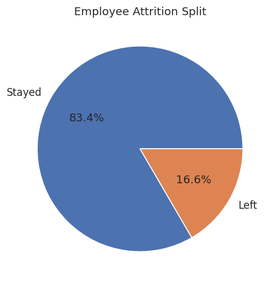
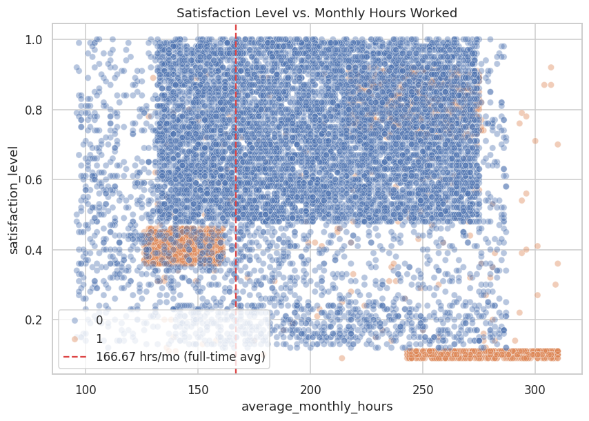
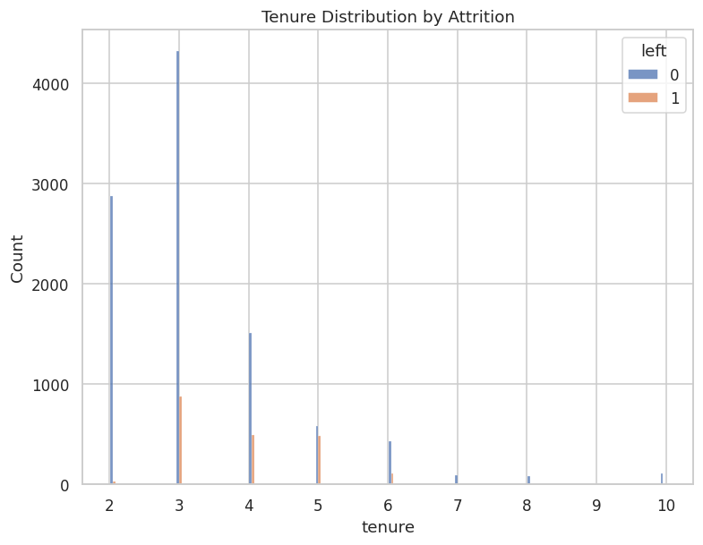
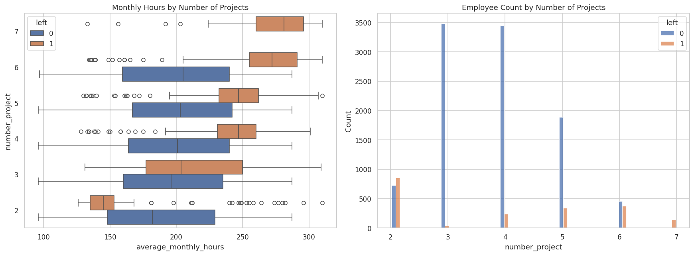
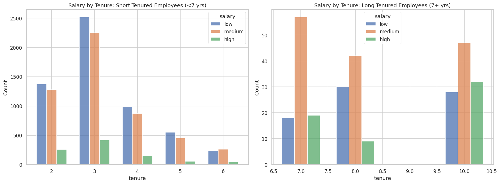
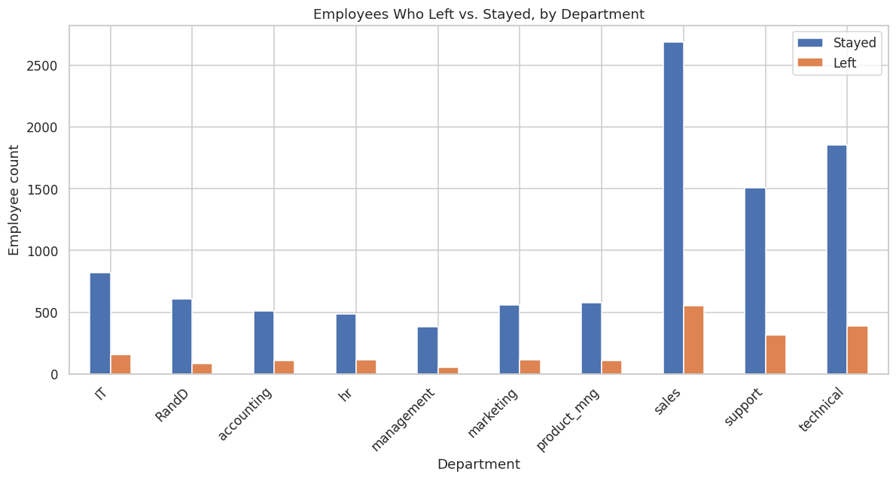
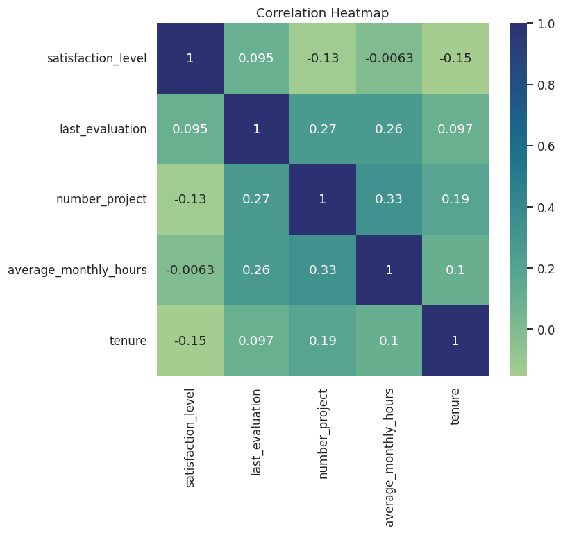
Three classifiers, same train/test split (75/25, stratified). The metric that matters most here is recall on the "left" class — missing an at-risk employee is the costly error, not a false alarm.
| Model | Accuracy | Precision (left) | Recall (left) | F1 (left) |
|---|---|---|---|---|
| Logistic Regression | 81.9% | 44.1% | 26.1% | 32.8% |
| Decision Tree BEST F1 | 98.6% | 98.2% | 93.6% | 95.9% |
| Random Forest | 98.6% | 99.1% | 92.6% | 95.7% |
pd.get_dummies(df, drop_first="False") — passing the string "False" instead of the boolean, which silently behaved like drop_first=True. Fixed to drop_first=False in the cleaned pipeline so every department dummy column is retained.
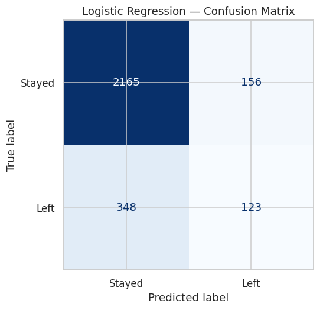
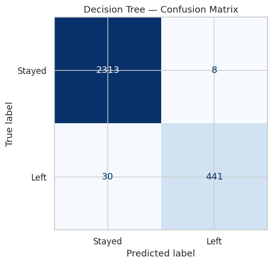
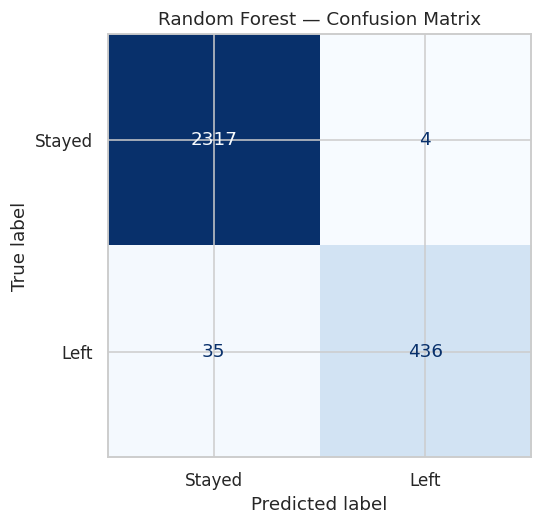
Feature importances from the Decision Tree, the model that best separates who stays from who leaves.
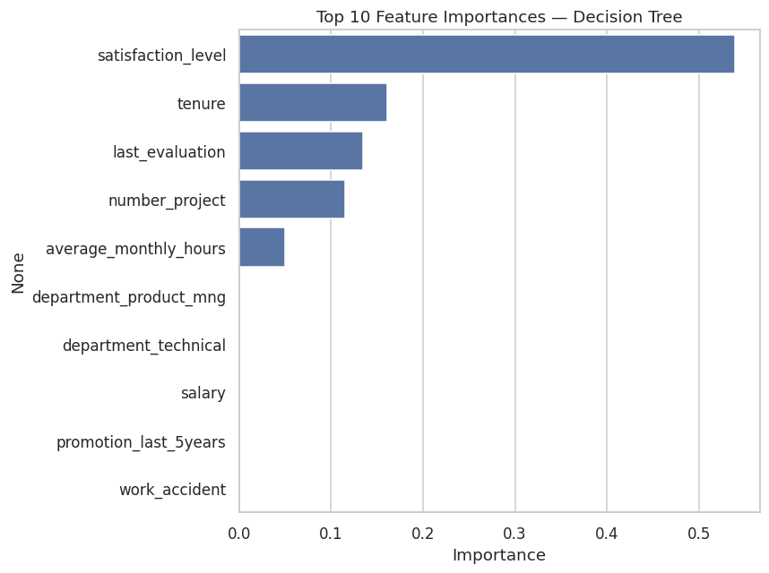